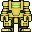
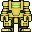

To build anything, you need materials. Keep in mind that most materials can be used to make walls, doors, floor tiles, chairs, tables and statues.
Metal
Metal
Found in: Ready stacks in Engineering, Auxiliary Tool Storage, E.V.A., Robotics and Atmospherics. Shaft Miners have the ability to smelt more from iron ore and Cargo can order more. Used for: Constructing various things from supportive elements to decorations Strategy: Hold in active hand and activate to start building
Description
Things you can make by having Metal in your hand and activating it:
Found in: From mining and some other sources. Used for: Making a few products, burning down the station, or used in a departmental Protolathe/Techfab Strategy: Hold in active hand and activate it to start constructing
Description
Things you can make by having Plasma sheets in your hand and activating them:
Plasma door (10 plasma sheets)
4x plasma tiles (1 plasma sheet)
Scientist Statue (5 plasma sheets)
Some other things you can do with Plasma:
Light it on fire with a lighter to turn it into burning gas.
Grind it for liquid plasma, useful for a large number of things, such as xenobiology.
Insert into a Protolathe/Techfab. Some products need this material.
Found in: Deliver iron and plasma ores to the ORM. Print Plasma + Iron alloy from silo-linked cargo, engineering or science protolathe/techfab. Stacks may exists in Engineering, E.V.A. and Robotics. Cargo can order more, but they are very expensive. Used for: Reinforcing walls, mechs, building an AI Core Strategy: Hold in active hand and activate to start building
Found in: Stacks exist in Engineering, Auxiliary Tool Storage, E.V.A.. More can be made from Metal sheets. Used for: Constructing grilles and reinforcing Strategy: Hold in active hand and use it on things
Description
Things you can make by having rods in your hand and activating them:
Use metal or almost any other material and click "4x floor tiles" (makes 4 floor tiles).
Silver
Silver
Found in: Deliver silver ore to the ORM. Eject silver from ORM or any silo-linked protolathe/techfab. Used for: Making a few products, or used in a departmental Protolathe/Techfab Strategy: Hold in active hand and activate it to start constructing
Description
Things you can make by having silver bars in your hand and activating them:
Silver door (10 silver bars)
4x silver tiles (1 silver bar)
Med Officer Statue (5 silver bars)
Janitor Statue (5 silver bars)
Sec Officer Statue (5 silver bars)
Sec Borg Statue (5 silver bars)
Med Borg Statue (5 silver bars)
Some other things you can do with Silver:
Insert into a Protolathe/Techfab. Some products need this material.
Found in: Deliver gold ore to the ORM. Eject gold from ORM or any silo-linked protolathe/techfab. Used for: Making a few products, or used in a departmental Protolathe/Techfab Strategy: Hold in active hand and activate it to start constructing
Description
Things you can make by having Gold bars in your hand and activating them:
Golden door (10 gold bars)
4x gold tiles (1 gold bar)
HoS Statue (5 gold bars)
HoP Statue (5 gold bars)
CE Statue (5 gold bars)
RD Statue (5 gold bars)
Simple Crown (5 gold bars)
CMO Statue (5 gold bars)
Some other things you can do with Gold:
Insert into a Protolathe/Techfab. Some products need this material.
Uranium
Uranium
Found in: Deliver uranium ore to the ORM. Eject uranium from ORM or any silo-linked protolathe/techfab. Used for: Making a few products, or used in a departmental Protolathe/Techfab Strategy: Hold in active hand and activate it to start constructing
Description
Things you can make by having Uranium sheets in your hand and activating them:
Uranium door (10 uranium sheets)
4x uranium tiles (1 uranium sheet)
Nuke Statue (5 uranium sheets)
Engineer Statue (5 uranium sheets)
May cause tiny amounts of radiation when constructing stuff with it.
Some other things you can do with Uranium:
Insert into a Protolathe/Techfab. Some products need this material.
Titanium
Titanium
Found in: Deliver titanium ore to the ORM. Eject titanium from ORM or any silo-linked protolathe/techfab. Used for: Used in a departmental Protolathe/Techfab and in Robotics Strategy: Hold in active hand and activate it to start constructing
Description
Things you can make by having Titanium sheets in your hand and activating them:
4x titanium tiles (1 titanium sheet)
Shuttle seat (2 titanium sheets)
Some other things you can do with Titanium:
Insert into a Protolathe/Techfab. Some products need this material.
Insert into an exosuit fabricator. Roboticists need this for mechs.
Titanium Glass
Titanium Glass
Found in: Deliver titanium ores and ash/sand/glass to the ORM. Print Titanium + Glass alloy from silo-linked cargo, engineering or science protolathe/techfab. Used for: Construction Strategy: Hold in active hand and activate it to start constructing
Description
Things you can make by having sheets in your hand and activating them:
Shuttle window (2 titanium glass sheets)
Plastitanium
Plastitanium
Found in: Deliver titanium and plasma ores to the ORM. Print Plasma + Titanium alloy from silo-linked cargo, engineering or science protolathe/techfab. Used for: Construction Strategy: Hold in active hand and activate it to start constructing
Description
Things you can make by having sheets in your hand and activating them:
4x plastitanium tiles (1 plastitanium sheet)
Some other things you can do with Plastitanium:
Use on wall girders to build a durable wall.
Plastitanium Glass
Plastitanium Glass
Found in: Deliver ores for plasma, titanium and glass to the ORM. Print Plasma + Titanium + Glass alloy from silo-linked cargo, engineering or science protolathe/techfab. Used for: Construction Strategy: Hold in active hand and activate it to start constructing
Description
Things you can make by having sheets in your hand and activating them:
Plastitanium window (2 plastitanium glass sheets)
Diamond
Diamond
Found in: Deliver diamond ore to the ORM. Eject diamond from ORM or any silo-linked protolathe/techfab. Used for: Making a few products, or used in a departmental Protolathe/Techfab Strategy: Hold in active hand and activate it to start constructing
Description
Things you can make by having Diamonds in your hand and activating them:
Diamond door (10 diamonds)
4x diamond tiles (1 diamond)
Captain Statue (5 diamonds)
AI Hologram Statue (5 diamonds)
AI Core Statue (5 diamonds)
Some other things you can do with Diamond:
Insert into a Protolathe/Techfab. Some products need this material.
Bluespace Polycrystal
Bluespace Polycrystal
Found in: Deliver raw bluespace crystals to the ORM. Eject bluespace crystal from ORM or any silo-linked protolathe/techfab. Used for: Used in a departmental Protolathe/Techfab or to make refined bluespace crystals. Strategy: Use with other hand to make refined bluespace crystals.
Description
This is the crystal you get when ejecting "bluespace crystal" from the silo network. It can't be used for much except turning it back into what is essentially the same thing as a raw crystal, which can be used for a few things.
Some things you can do with Bluespace Polycrystal:
Insert into a Protolathe/Techfab. Some products need this material.
Hold in one hand and click it with other hand to break off a refined bluespace crystal .
Use "raw", artificial or refined bluespace bluespace crystals in hand to teleport.
Found in: Ruins in space, on Lavaland or in Xenobio Used for: Making a few clown related products, or used in a departmental Protolathe/Techfab Strategy: Hold in active hand and activate it to start constructing
Description
Things you can make by having Bananium sheets in your hand and activating them:
4x bananium tiles (1 bananium sheet)
Clown Statue (5 bananium sheets)
Some other things you can do with Bananium:
Insert into a Protolathe/Techfab. Some products need this material, such as the air horn.
Insert into an exosuit fabricator. Roboticists need this to make the H.O.N.K exosuit and the Clown Module.
How to produce Bananium:
Find in certain space or lavaland ruins. There you can also find bananium ore which you can smelt in the Ore Redemption Machine or Mining furnace.
Runite
Runite
Found in: Ruin on Lavaland Used for: Making things with Autolathe that let you use custom materials Strategy: Insert into an autolathe. Print toolbox or knight armor.
Description
Rare material you may find. Can only be used to make things that let you use custom materials, such as the knight armor or toolbox from the Autolathe. The knight armor requires the Magic Disk of Smithing to be inserted into the Autolathe first.
Planks
Planks
Found in: Ready stacks can be found nowhere, can be made from deconstructing tables. Used for: Constructing various wooden things Strategy: Hold in active hand and activate it to start constructing
Description
Things you can make by having Planks in your hand and activating them:
Grow Tower Caps and cut them up with a sharp item, for example a Hatchet.
Leather
Leather
Found in: Ready stacks can be found nowhere, but can be produced. Used for: Making leather products such as toolbelts and bandoliers Strategy: Hold in active hand and use it to craft things
Description
Things you can make by having Leather in your hand and activating it:
Wallet (1 piece)
Muzzle (2 pieces)
Botany gloves (3 pieces)
Toolbelt (4 pieces)
Leather satchel (5 pieces)
Bandolier (5 pieces)
Leather jacket (7 pieces)
Leather overcoat (10 pieces)
How to produce Leather:
Either use the Biogenerator inside Hydroponics or Garden,
Dry the wet leather by using it on a drying rack, or by heating it above 500 Kelvin for some time. throwing it into the fucking microwave. Alternatively, add some metal rods to a bonfire to make a grill, and place the wet leather on top.
Cloth
Cloth
Found in: Ready stacks can be found nowhere, but can be produced. Used for: Crafting certain textiles and repairing damaged clothes Strategy: Hold in active hand and use it to craft things.
Description
Use on clothes damaged by fire or acid to repair them.
Things you can make by having Cloth in your hand and activating it:
Found in: Ready stacks can be found nowhere, but can be produced. Used for: Making a few plastic products, or used in a departmental Protolathe/Techfab Strategy: Hold in active hand and use it to craft things
Description
Things you can make by having Plastic in your hand and activating it:
4x plastic floor tiles (1 plastic sheet)
Folding plastic chair (2 plastic sheets)
Plastic flaps (5 plastic sheets)
Water bottle (1 plastic sheet)
Large water bottle (3 plastic sheets)
Colo cups (1 plastic sheet)
Wet floor sign (2 plastic sheets)
Blank sign (1 plastic sheet)
Other things you can do with Plastic:
Insert into a Protolathe/Techfab. Some products need this material, such as XL beakers
Found in: Can sometimes be found in Maintenance. Used for: Making a few items Strategy: Hold in active hand and use it to craft things
Description
Things you can make by having Cardboard in your hand and activating it:
Box (1 cardboard sheet)
Light tubes (1 cardboard sheet)
Light bulbs (1 cardboard sheet)
Mouse traps (1 cardboard sheet)
Cardborg suit (3 cardboard sheets)
Cardborg helmet (1 cardboard sheet)
Pizza box (1 cardboard sheet)
Folder (1 cardboard sheet)
Large box (4 cardboard sheets)
Cardboard cutout (5 cardboard sheets)
Fancy boxes (many types) (1 cardboard sheet)
How to produce Cardboard:
Empty a box and activate it in your hand to turn it into cardboard. Most crewmembers start with a box in their backpack.
Can be produced with a biogenerator.
Sand
Sand and Volcanic ash
Found in: Crafted by using sand or volcanic ash in hand. Used for: Turning into glass or sandstone. Strategy: Hold in active hand and activate it to start constructing
Description
Sand and ash File:Volcanic ash.png are both basically the same thing but with different sprites.
Things you can make by having piles of Sand or Ash in your hand and activating them:
How to produce Volcanic Ash:
Mine volcanic ash from lavaland ground.
How to produce Sand:
Mine volcanic ash from lavaland ground, and use it in hand to make Sandstone Bricks. Then use the Sandstone in hand to turn it into sand.
Sandstone
Sandstone
Found in: Crafted by using sand or volcanic ash in hand. Used for: Making a few products, and ghetto hydroponics. Strategy: Hold in active hand and activate it to start constructing
Description
Things you can make by having Sandstone bricks in your hand and activating them:
Pile of dirt (3 sandstone bricks)
Sandstone door (10 sandstone bricks)
Assistant Statue (5 sandstone bricks)
Breakdown into sand (1 sandstone brick)
How to produce Sandstone:
Mine volcanic ash from lavaland ground, and use it in hand.
Blocks of Sand
Blocks of sand
Found in: Crafted by using sand or volcanic ash on a sink. Used for: Construction material. Strategy: Hold in active hand and activate it to start constructing
Description
Lets you build some things made out of sand.
Meat
Meat
Found in: Insert raw slabs of meat into a Sheet-meister 2000. Used for: Making a few products. Strategy: Hold in active hand and activate it to start constructing.
Description
An edible material which also makes squishy sounds.
Things you can make by having Meat sheets in your hand and activating them:
Chair (1 meat sheet)
Toilet (1 meat sheet)
Sink (1 meat sheet)
4x Floor tiles (1 meat sheet)
Some other things you can do with meat sheets:
Meat walls
Meat tables
Constructions
Floors
Lattice
The basic base for all types of construction, this is placed directly in space.
Lattice
Requires to build
How to build
x1
Use the rod on an empty space tile.
How to deconstruct
Tools
Use wirecutters to cut the lattice into one rod.
Catwalk
Just like a lattice, except you can place wires on it.
Catwalk
Requires to build
How to build
x1
Use the rods on a lattice.
How to deconstruct
Tools
Use wirecutters to cut the catwalk into 2 rods.
Plating
The basic floor which you put things like wires and pipes upon. 'All' floors and walls are built on top of this.
Plating
Requires to build
How to build
x1
Use a floor tile on a lattice or catwalk.
How to deconstruct
Tools
Use a crowbar on broken plating, otherwise it does not deconstruct.
Other kinds of carpet exist, like funky arcade carpets, or garishly beautiful corporate carpets with NT written on them everywhere.
Red carpets can be reskinned to have other religious symbols, or star shapes.
Light Floor
A fancy, more futuristic floor that lights up its surroundings.
Light Floor
Requires to build
How to build
x1 x1 x5
Use the cable wire on glass.
Use the metal on the tile you get.
(Deconstruct the floor to plating, if needed.)
Place the light tile on a plating.
How to deconstruct
Tools
Use a crowbar on the light tile to remove the metal.
Use wirecutters on the resulting tile to separate wires from glass.
Walls
Normal Wall
This is the standard type of wall found around the station, they are easy to construct and remove but are not as strong as reinforced walls. They also come in a hidden door variety. Walls can also be made out of different minerals. They're useful for:
Keeping people out.
Keeping people in.
Keeping people from going places.
Wall
Requires to build
How to build
x4
Stand where you want the wall.
Click the metal in your hand to open the construction panel.
Choose 'Build wall girders' from the list.
Use the remaining 2 sheets of metal on the girder.
How to deconstruct
Tools
Weld off the plating.
Use a Wrench to unsecure the girder.
Screwdriver to disassemble the girder.
Reinforced Wall
This is the reinforced type of wall found in secure areas of station, they are reasonably simple to construct, but are very time consuming to remove. They also can be made as a hidden door. They're useful for:
Keeping people in and out of high security areas.
Reinforced Wall
Requires to build
How to build
x2 x2
Stand where you want the reinforced wall.
Click the metal in your hand to open the construction panel.
Choose 'Build wall girders' form the list.
Use the plasteel on the girders to reinforce them.
Use the last plasteel sheet on the reinforced girders to finish the wall.
How to deconstruct
Tools
Wirecutters to cut the outer grille.
Screwdriver to remove the support lines.
Weld through the metal cover.
Crowbar to pry off the cover.
Wrench to loosen the support rods.
Weld through the support rods.
Crowbar to pry off the outer sheath.
Screwdriver to unsecure the support struts.
Wirecutters to remove the support struts.
Wrench to unsecure the girder.
Screwdriver to disassemble it.
Normal/Reinforced Hidden Door
Also known as "Fake Walls" or "Hidden Walls". With a little imagination, hidden doors can be used in many marvelous tactics, varying from ambushes to passages into your very own secret hideaway room.
Click to open.
An almost undetectable escape route.
Otherwise, same as a regular wall.
Hidden Door Reinforced Hidden Door
Requires to build
How to build
x4 or x2 x2
Stand where you want the door.
Click the metal in your hand to open the construction panel.
Choose 'Build wall girder' from the list.
Use wrench on the girder and wait a few seconds for it to dislodge.
Use the remaining 2 sheets of metal, or plasteel for a reinforced type, on the girder.
To turn a normal wall into a hidden door, deconstruct it until the final screwdriving of the girder, and instead use 2 sheet of metal on the girder.
How to deconstruct
Tools
Screwdriver to tighten the bolts and turn it into a regular wall. Or...
Weld to dismantle the false wall.
Screwdriver again to disassemble the girder.
Normal/Reinforced Windows
Windows are aesthetically quite pleasing because they are almost invisible. You can build two types of windows:
Full: A see-through wall. Usually only used if you don't have enough for 2-4 one-directionals or the metal for a wall.
One Direction: Stops movement only from the way it faces.
Windows Reinforced Windows
Requires to build
How to build
x1/x2 (single/full) or x1/x2 (single/full)
Click the glass/reinforced glass in hand.
Select Full or One Direction from the menu.
Drag where you want it.
Alt-click to rotate to the direction you want if one-directional.
Screwdriver it in place.
Continue if reinforced glass:
Crowbar (Pop pane in).
How to deconstruct
Tools
Normal window (including plasmaglass):
Screwdriver to unscrew the window from the floor.
Wrench to deconstruct the window.
Hitting a normal pane repeatedly with a weapon will smash it into glass shards. Normal windows have 50 integrity (health), while plasma windows have 300. Directional windows have half integrity.
Reinforced window (including reinforced plasmaglass):
Welder to heat one way screws (15 seconds, right click)
Screwdriver to unscrew one way screws (5 seconds, must be done within 30 seconds of step 1, right click)
Crowbar to pop out panel (4 seconds, right click)
Wirecutters to cut connecting bars (2 seconds, right click)
Wrench to unbolt frame (4 seconds, right click)
Reinforced windows require a melee item over 11 damage to damage at all, have 150 integrity, and 80 melee armor. This is approximately 1 minute of sustained beating with a toolbox. Reinforced plasma windows require a melee item over 21 damage to damage at all, have 1000 integrity, and 80 melee armor. Breaks down into glass shards and a metal rods. Directional windows have half integrity.
Use the frame on the wall you want the APC on. May only be placed in areas which have been defined as a Station Area using the Chief Engineer's Station Blueprints) or by creating a new area with the "create new area" hud-button (looks like a lizard face). The area used is the area in which the person placing the frame is standing.
Add a Power Control Module.
Remove any floor tile in front of it.
Add cable coil. This creates a terminal on the floor.
Wire the power network into a powered wire under the terminal, for external power.
Screwdriver the APC electronics into place.
Add the power cell.
Crowbar shut. It starts unlocked with the cover engaged and the main breaker turned off.
How to deconstruct
Tools
Swipe Card to unlock APC, and then disengage cover lock. Alternatively, if the APC is broken (tilted and cracked cover), try using a fire extinguisher to smash off the cover, allowing access to the battery.
Crowbar to open the cover.
Remove power cell by hand.
Screwdriver to unsecure electronics.
Crowbar to lift floor tile in front of APC.
Wirecutters on APC to remove cable and terminal from floor.
Crowbar to remove Power Control Board. (You can click on the broken frame with a new APC frame here to skip to step three of construction)
Welder to remove from wall.
Wrench the frame, that is now detached from the wall, deconstructs it to two metal sheets.
Build frame from 2 metal sheets (or 1 metal sheet for small fixtures).
Place frame on wall.
Add wires.
Screwdriver.
Add light tube (or light bulb for small fixtures).
How to deconstruct
Tools
Turn off the light if needed and remove the light tube or bulb from the fixture.
Screwdriver the light fixture to expose the wires.
Wirecutters to cut the wires.
Wrench the fixture frame to deconstruct it.
Requests Console
Can be found in every room where someone is supposed to work. The Requests Consoles can be used to request low/high urgency assistance, request supplies with low/high priority, relay anonymous information or view sent and received messages. All of these produce a message to the selected Request Console and can be swiped with an ID to confirm the identity of the sender. Can be hacked to enable the 'EXTREME' priority for your requests.
The Bridge and Heads' Offices have special Requests Consoles which can send station-wide announcements if swiped with an authorized ID.
Requests Console
Requires to build
How to build
Roundstart only. Can not be constructed.
How to deconstruct
Tools
Can't be deconstructed without violence.
Other
Grille
Grilles are usually used in combination with directional windows. They allow gases and energy rounds to pass through them, but stop other objects. They can also be electrified for high security areas by building them on top of a live power wire.
Keeping people in or out.
Securing an area with electrified grilles.
Grille
Requires to build
How to build
x2
Stand where you would like the grille to be placed.
Click on the stack of 2 rods with the hand you have them in.
How to deconstruct
Tools
Use wirecutters to neatly cut the grille, or
...Use a screwdriver to unfasten and drag it away, or
...Smash it down.
or
Barricade
The poor man's barrier, not nearly as strong or cool looking. Useful for:
Keeping people in or out, for a short while.
Wooden Barricade
Requires to build
How to build
x5
Stand where you would like the barricade to be placed.
Click on the stack of planks in your hands and choose "Wooden Barricade".
How to deconstruct
Tools
Cannot be neatly deconstructed. Just smash it with anything to get 3 planks.
Anything
How to repair
Tools
Use wooden planks to repair.
Windoor (Window-door)
Like a door, but with access controls. Windoors can't be hacked or even pried open with jaws of life. They can be pried open with a crowbar if unpowered, and emagging works.
Windoor
Requires to build
How to build
x5 x2 x1 Airlock Electronics x1
Click the reinforced glass pane.
Click the "Windoor" button.
Wrench.
Plasteel (Optional: To create a secure windoor).
Cable.
Airlock Electronics.
Crowbar.
How to deconstruct
Tools
Open the windoor.
Screwdriver to open the maintenance panel.
Crowbar out the airlock electronics.
Remove wires from the assembly with wirecutters.
Unanchor it by wrenching.
Weld it to deconstruct the assembly into reinforced glass and rods.
Button
This is a button - it can remotely control an airlock. You can also put a signaler in one to have it pulse the signaler when pressed.
Button
Requires to build
How to build
x1 OPTIONALAirlock Electronics x1
Use the metal and make a Button Frame.
Use the Button Frame on a wall.
Click the Button Frame on the wall to change its button type.
Add a signaler (other assemblies may work, untested) or airlock controller (normally unobtainable, but this is what makes them work when map-spawned).
Add the Airlock Electronics Board to the button frame if you want the button to require a certain access to activate or deconstruct. (You need to program this)
Screwdriver the Button Frame to close it.
How to deconstruct
Tools
(Screwdriver the button open.)
Remove the airlock electronics.
Wrench the open button frame.
Weld it to deconstruct to metal plates.
Firelock
This is a firelock - it locks an area when a fire alarm in the area is triggered. Don't get squished!
(You can't construct firelock while in transition (not docked to anything), however, you can construct directional firelocks while in transition.)
Firelock
Requires to build
How to build
x3 OPTIONAL:x2 x1 Firelock Circuitry x1
Use the metal and make a Firelock frame.
Add the Firelock Circuitry to the firelock frame.
(OPTIONAL) Add Plasteel to make a heavy firelock.
Wrench to bolt it and finish.
How to deconstruct
Tools
(Crowbar the firelock shut.)
Weld the firelock shut.
Screw to unlock the firelock's floor bolts.
Wrench the firelock unfasten the floor bolts.
Crowbar to pry out the circuit board.
Weld to deconstruct into metal plates.
Has 40% chance to drop a frame when destroyed by force.
Reflector
This is an angular beam reflector. Any energy projectiles hitting it will be reflected at an angle depending on rotation. There are also "box" reflectors that change the direction of struck projectiles to face a single way, regardless of where they impact the reflector. The supermatter engine uses reflectors to make its emitters' beams go through a single path. Ballistic projectiles will not be reflected!
You can weld it to anchor it to or unanchor it from the floor, or to repair it.
Use a screwdriver to lock or unlock its rotation.
Alt-click it to rotate its angle.
Reflector
Requires to build
How to build
x5 x5 ORx10 ORx1
Use the metal and make a reflector frame.
Option 1: Add 5 glass sheets to make a single-sided reflector.
Option 2: Add 10 reinforced glass sheets to make a double-sided reflector.
Option 3: Add 1 diamond sheet to make a box reflector.
Weld the reflector to the floor (or don't, it'll still work).
How to deconstruct
Tools
Weld the reflector to cut it free from the floor.
Wrench the reflector to disassemble it.
Airlock
This is an airlock - it locks air. Everyone just calls them doors, although they are not actual doors. If you want to hack an airlock, see here.
Airlock
Requires to build
How to build
x4 OPTIONAL:x1 x1 Airlock Electronics x1
Use the metal and make an Airlock Assembly.
Wrench it in place.
(Optional) Use Pen to name the airlock.
(Optional) Add Reinforced Glass to make a glass airlock.
Add Wires.
Use the Airlock Electronics Board and set the access level.
Add the Airlock Electronics Board to the airlock frame.
(Optional) Use 2 sheets of Metal or Plasteel for added security
x10 At least: one power source one drive (HDD or SSD) one processing unit access to programs (network cards or datadisks)
Use the metal and make a Modular Console.
Add your drive (HDD or SSD), processing unit and power source (wired or powercells, powercells require an additional "powercell controller" component).
install a network card to access the NET and download more programs.
Use disks to transfer data or programs from another modular decive in case you cannot access the NET.
The actual doors of the game. Nobody ever uses these poor things and they aren't even airtight. Most ore materials (and wood) can be made into a door.
Doors
Requires to build
How to build
The mineral (or wood) of your choice x20
Stand where you would like the door.
Use the metal and make a Door.
How to deconstruct
Tools
Wrench to unwrench it.
Welder to disassemble the frame.
Conveyor Belt
The Conveyor Belts seen in Cargo, Disposals, and other places around the station can be set up similar to a floor tile, only they require a bit more setting up to become functional. Clicking a placed conveyor belt with an item will put that item on the belt unless it's a wrench, screwdriver, crowbar or you are on Template:Combat Mode.
Conveyor Belt and Conveyor Belt Switch
Requires to build
How to build
An Autolathe or protolathe/techfab, with enough metal and glass.
Use the lever on the belt assemblies to link them. This must be done before placing them!
Place the belt assemblies by using them on the floor (You can then rotate the belt tiles by using a wrench or reverse direction with a screwdriver).
Place the lever somewhere by clicking the floor with it.
How to deconstruct
Tools
Crowbar to remove the Conveyor Belt tiles and Switches.
Railings are typically used on maps with extra Z-levels to prevent people from falling down.
Railings
Requires to build
How to build
x3
Stand where you would like the railings to be placed.
Click on the stack of rods with the hand you have them in and choose railings.
Alt-click the railings to rotate them into desired orientation.
How to deconstruct
Tools
Use Wrench to unfasten the railings
Use wirecutters to cut the railings apart
Sink
Allows you to wash things. Have empty hands and click on sink to wash yourself, or have a tool in hand and click on sink to wash it. If you have nothing in your active hand you will wash your face (if targeting the head, eyes or mouth) or your hands (if targeting anywhere else).
Some sinks have a cosmetically different appearance (e.g. File:Sink alt.png) but all of them work identically.
Sink
Requires to build
How to build
x1
x1
Use the rigid material in hand to craft a sink frame.
Drag the sink frame to desired location.
Alt-click the sink frame to rotate it.
Add a water recycler to finish the sink.
How to deconstruct
Tools
Use Wrench to disassemble into metal.
Shower
The HS-451. Installed in the 2550s by the Nanotrasen Hygiene Division. Switch the shower on and off with an empty hand. Use a wrench to adjust the shower water temperature from normal to freezing, from freezing to boiling or from boiling to normal. Use an analyzer to identify the shower's water temperature without risking burns.
Shower
Requires to build
How to build
x2
x1
Use the metal in hand to craft a shower frame.
Drag the shower frame to desired location.
Alt-click the shower frame to rotate it.
Add a water recycler to finish the shower.
How to deconstruct
Tools
Can only be deconstructed by force. Toggle automatic water regeneration with a multitool.
Furniture
Chairs
Chairs are for sitting down and making the place look nice. The only real use for chairs are to restrain people, building electric chairs or to buckle in when the shuttle is about to take off. Office chairs can also be used to move buckled people around.
Wrench a chair to transform it back into the starting material.
Tables/Reinforced Table
Tables are used to hold objects on. The most common ones are metal, glass and reinforced. You can climb onto tables, though it takes a short while. Tables can also be used for ghetto surgery.
Table Wooden Table Glass Table Poker Table Fancy Table (has many types) Reinforced Table Operating Table
Requires to build
How to build
x2 or x2
x1 or x1 or x1 or x1 or x1 or x1
Pick up some rods (or wooden planks, if you want to make a poker table).
Stand on the tile where you want the table.
Activate them in your hand.
Select table frame from menu.
Use material on the table frame:
Wood/glass/plasteel/metal for table made of that material.
Any type of carpet on metal frame for fancy table of that color.
Standard carpet on wooden frame for poker table.
Silver on metal frame for operating table.
How to deconstruct
Tools
Be on any other intent than help
(If a Reinforced Table: Welder first to weaken the table.)
Wrench to disassemble it or screwdriver to partly disassemble it
()
Closet
Closet are among the most common and arguably the most useful of containers on the station. Nearly anything can fit inside, barring other closet, crates, and certain especially large objects like racks and MULEbots.
Besides being welded shut, some closet can be, well, locked. Several levels of access exist, such as security-, captain-, and private-level access. These can be opened with the proper level identification card, emag item, or with enough damage.
If you don't want to take out your id to open these every time, you can alt-click them to lock/unlock them.
If you yourself are inside a closet, you can see your surroundings. Normally you can move in any direction to exit the closet, but if the closet is locked or welded, you will be unable to exit and you cannot unweld or unlock your cell from inside - at that point if you try to move around you will instead throw yourself against the sides of the closet, making a BANG BANG sound that can be heard from several squares away. Using the Resist button will allow you to slowly open the locker.
Coffins count as closets.
Different types of closets:
Closet
Requires to build
How to build
x2 or x5 for coffin
Stand where you want the closet.
Activate metal in hand.
Choose closet from the list.
How to deconstruct
Tools
Open the closet.
Weld the closet with a welder to disassemble it into metal.
Rack
Racks are flat and wide, incapable of being walked over, and bolted together. They can hold any number of items, but they hold them stacked on top of each other like a table. They are most common in maintenance tunnels and the EVA room.
Rack
Requires to build
How to build
x1
Activate metal in hand.
Choose Rack from the list.
Stand where you want the rack.
Activate Rack Parts in hand.
How to deconstruct
Tools
Be on any other intent than help.
Use a wrench to dismantle it to some Rack Parts.
Use a wrench on the Rack Parts to disassemble them into metal.
Beds
Get your mind out of the gutter, they're for sleeping! Most station's beds come with a bedsheet, and new beds without sheets can be made with metal. The Medbay's preferred variation of a bed is the movable and collapsible Roller Bed Roller Bed, which is extremely useful for transporting patients.
You use a bed by going on top of it and *sleep. To buckle someone, put them on the bed and drag their sprite on it, to release click on the bed.
Bed
Requires to build
How to build
x2
Stand where you want the bed.
Activate metal in hand.
Choose Bed from the list.
How to deconstruct
Tools
Use a wrench to dismantle it to two sheets of metal.
Bookcase
Holds any number of books inside.
Bookcase
Requires to build
How to build
x5
Construct a frame with 4 wooden planks.
Wrench the frame into place.
Add a plank to the frame to make a shelf.
How to deconstruct
Tools
Remove any books.
Crowbar out the shelf.
Unsecure the frame with a wrench.
Break apart the frame with a crowbar.
Drying Rack
Dries herbs for smoking, meat into jerky and grapes into raisins.
Drying rack
Requires to build
How to build
x10
Use the planks in hand.
How to deconstruct
Tools
Wrench to unsecure the rack.
Screwdriver to disassemble it.
Display Case
Show off an item within a glass case. Use an ID to open a display case.
Display Case
Requires to build
How to build
x5 x2
Use the planks in hand and build a display case chassis.
(Optional) Use airlock electronics to determine who can/cannot open the case.
Add glass to build a normal display case.
How to deconstruct
Tools
Wrench to disassemble the unfinished frame.
Power Wires
Power wires (cable coils) are available from autolathes, yellow toolboxes, engineering vending machines or scattered about the your ship, or plantery ruins, or on any other random place in the Frontier.
Wires can be electrified if connected to a power net (a charged SMES or APC is attached to the wire), and you will get fried if you place or cut them.
Since we are NOT TG STATION we use Old-Wires, these require some fancy-fan dangling to figure out, but the basis upon which it is formed is simple: stand on the side of a tile you want, and click it; it will place a wire from the center pointing towards you; you can then move to another tile and click on the wire placed prior and it will attempt to wire that wire. It's hard to explain, so I'll like a better guide in the meanwhile: https://baystation.xyz/index.php?title=Guide_to_Construction#Wiring (Credit to Baystation's wiki)
Wire Art
...Is what TG has; it wires the exact same way as standard power wires. However, they do not do anything in practice.
Most machines are connected to powernets wirelessly by being in an arbitrary "area" containing a charged APC. Though some machines must be connected by having a powered wire under them.
With wire knobs now being just what a wire looks like after it's cut, all grilles on top of a wire that has power are shock grilles.
Please note those machines must also be anchored (generally wrenched down) to be connected.
Special cases :
APCs are connected to an adjacent powered wire with a special terminal, by doing the cable coil construction step.
An exception to the cardinal function is SMES, which has an input an output wire next to each other without being connected.
Wire-net Reset
This is Byond's attempt to "reset" the whole power net in order to deal with new/removed wires that shift the power value of a whole system. It will cause APCs to stop charging for a moment, and in huge nets it can shut down the charging of all APCs for a while.
Don't mess with wires unless you have to, it causes problems to everyone in both OOC (potential lag) and IC (power loss).
This is also effected by docking/undocking your vessel; which will cause Holofield Generators to buzz, and shut down.
Thank you BYOND.
Pipes
Pipes are constructed from Pipe Dispensers in Atmospherics (or with an RPD if you aren't a complete wally).
To use a Pipe Dispenser, follow these steps:
Put Dispenser in a powered area.
Wrench Dispenser to lock it into place.
Click on the Pipe Dispenser with an empty hand and select the pipes you wish to use.
You have a pipe to play with now.
Wrench Dispenser to make it mobile once more.
Placing and Removing Pipes
Disposal Pipes
Rotate the pipe to the direction you wish the pipe to be in.
Wrench the pipe to the ground.
Use a lit welder to fuse the pipe to the ground.
Gas Pipes
Rotate the pipe to the direction you wish. For pipes to connect they must be on the same layer.
Wrench into place.
Turn on the pipe, if necessary.
How to Remove a Pipe
Perform the step you used to set the pipe into place in reverse (make sure the pipe is powered off).
Brace for any junk that might blast out of the pipe.


  Robots, Cyborgs and Mechs
 Robots, Cyborgs and Mechs


{kind=link}
{kind=link}
{kind=link}
{kind=link}
{kind=link}
{kind=link}
{kind=link}
{kind=link}
{kind=link}
{kind=link}
{kind=link}
{kind=link}